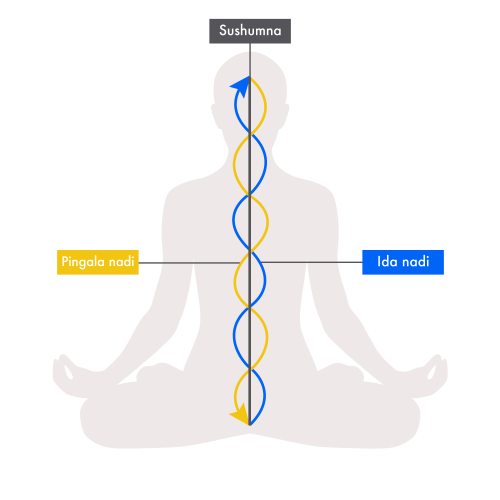

The word Hatha is often translated as "forceful" — suggesting a vigorous physical practice. But the deeper etymology reveals something entirely different. Ha means sun; tha means moon. Hatha Yoga is the science of balancing the solar and lunar energies within the human being — the active and receptive, the heating and cooling, the masculine and feminine polarities that govern our entire physiology.
This is not poetry. The solar and lunar energies correspond directly to the two main energy channels of the body: Pingala (sun, right side, heating, activating) and Ida (moon, left side, cooling, calming). These in turn map precisely onto the sympathetic and parasympathetic branches of the autonomic nervous system — which modern science confirms as the primary regulators of our physiological and psychological state.
The Purpose of Hatha Yoga
Classical texts are unambiguous about what Hatha Yoga is for. The Hatha Yoga Pradipika — the foundational text of this tradition, written by Swami Swatmarama in the 15th century — opens with this statement:
— Hatha Yoga Pradipika 1.2
Raja Yoga is the yoga of the mind — the systematic science of meditation that culminates in Samadhi (absorption in pure consciousness). Hatha Yoga exists to prepare the body and nervous system for this ultimate purpose. It is not the destination; it is the preparation.
This matters enormously in practice. When the body is purified and prana flows freely through the nadis, the mind naturally becomes more stable and clear. Meditation deepens. Insight arises. States that previously seemed impossible become accessible. Hatha Yoga creates the physiological conditions for transformation at the level of consciousness.

The Six Components of Classical Hatha Yoga
The Gheranda Samhita — another foundational text — describes Hatha Yoga as a sevenfold system. The most fundamental six components are:
- Shatkarma — six purification practices that cleanse the body of accumulated waste and toxins at the physical and pranic levels
- Asana — yogic postures that purify the nadis, stimulate the chakras, and create stability of body and mind
- Mudra — gestures and seals that redirect prana and create specific states in the nervous system
- Pratyahara — withdrawal of the senses from external stimulation
- Pranayama — regulation and expansion of the vital life force through breath
- Dhyana — meditation, the culminating practice to which all others lead
Notice that modern yoga classes typically offer only a fraction of this system — usually asana alone, occasionally with a brief pranayama and guided relaxation at the end. The full classical system is rarely taught in contemporary settings.
Shatkarma: The Foundation
What distinguishes classical Hatha Yoga most sharply from modern yoga is the inclusion of shatkarma — the six purification practices. These include:
- Neti — nasal cleansing (jala neti, sutra neti)
- Dhauti — digestive system cleansing
- Nauli — abdominal massage through isolated rectus abdominis muscle rotation
- Basti — colon cleansing
- Kapalabhati — frontal brain cleansing through rhythmic exhalations
- Trataka — fixed gazing to purify the eyes and develop concentration
These are not optional add-ons. The classical tradition is explicit: without the purification of the nadis through shatkarma, pranayama cannot work effectively because prana will not flow freely through blocked or impure channels. You cannot build on a dirty foundation.
Why the Full System Matters
Millions of people around the world practise yoga — yet most report that despite years of practice, something feels incomplete. Flexibility improves. Stress decreases. But the deeper transformation that yoga promises — the stillness of mind, the clarity of perception, the genuine experience of inner freedom — remains elusive.
This is not a failure of the practitioner. It is a natural consequence of practising only part of a system designed to work as a whole. A car engine with only three of its six cylinders firing will run — but never at its full capacity.
The Complete Hatha Yoga System at a Glance
- Shatkarma — purifies body and channels before other practices
- Asana — creates stability, awakens prana, purifies nadis
- Mudra & Bandha — seals and redirects prana, activates chakras
- Pranayama — expands and regulates prana throughout the system
- Pratyahara — withdraws awareness from external stimulation
- Dhyana — meditation as the fruit of all preceding practices
The full classical system is not complicated — but it does require proper instruction and sequential learning. Each component prepares the ground for the next. Taught in the correct order, with appropriate practices for each individual, classical Hatha Yoga is one of the most comprehensive and effective systems for human development ever devised.